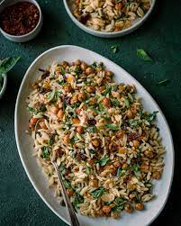

Lemon Orzo

Description
This dish is a classic take on an old favorite. Creamy, lemony, and always sure to hit the spot!
Ingredients:
- 1 cup heavy cream
- 3 cups of chicken bone broth
- 1 pound of chicken
- 2 cups of orzo
- 1 cup of spinach
Steps:
- Cook the chicken
- Add your chicken bone broth and bring to a boil
- Add the orzo
- After 6 minutes, add the heavy cream
- As the orzo cooks add the spinach
- Serve immediately and enjoy!